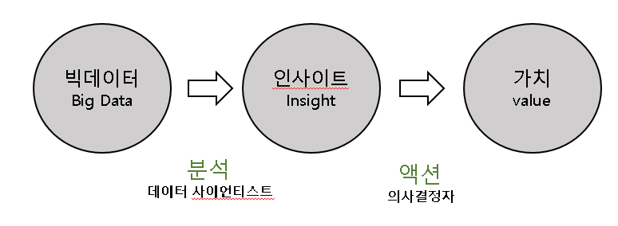

<DIV style="position:absolute; left:500; top:40;">
  <font size=7>데이터천재들은 어떻게 기획하고 분석할까?</font size></div>


    <DIV style="position:absolute; left:460; top:300;">
      <font size=6>
        저자는 데이터가 활용되는 과정을 ‘데이터-인사이트-가치’의 흐름으로 설명한다.
    </font size></div>
     <DIV style="position:absolute; left:460; top:370;">
      <font size=6>
          구조는 다음과 같다.
    </font size></div>

    <DIV style="position:absolute; left:600; top:450;">
     
    </div>


<a href="index.html"
 <DIV style="position:absolute; left:130; top:80;">
  </div></a>
   <a href="webpage2.html">
    <DIV style="position:absolute; left:100; top:330;color:#25D792">
     <font size=6>빅데이터의 구성요소</font size></div></a>
      <a href="webpage3.html">
       <DIV style="position:absolute; left:100; top:430;color:#FF0000">
        <font size=6>데이터의 활용</font size></div></a>
          <a href="webpage4.html">
           <DIV style="position:absolute; left:100; top:530;color:#25D792">
            <font size=6>군집분석</font size></div></a>
              <a href="webpage5.html">
               <DIV style="position:absolute; left:100; top:630;color:#25D792">
                <font size=6>인공지능</font size></div></a>
